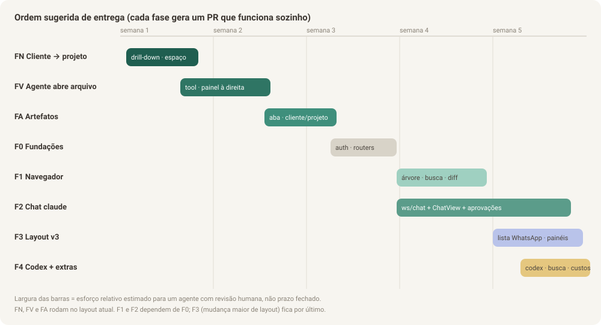

Parte 5 de 8
Parte 5 — Plano de execução e prompts prontos para o agente
Esta parte transforma as Partes 1–4 em fases entregáveis, cada uma com tarefas, arquivos, critério de pronto e um prompt para copiar e colar num agente Claude (Claude Code na web ou local). Execute uma fase por PR.

5.1 Regras que valem para todas as fases
Cole estas regras junto com qualquer prompt (elas já estão incluídas nos prompts abaixo, resumidas):
- Leia antes de codar:
README.md,docs/melhorias-tablet/00-visao-geral-e-diagnostico.mde a parte da fase. Siga as convenções do código existente: comentários explicando o porquê (o projeto usa comentários longos em português), sem TypeScript, sem biblioteca de UI, estilos com os tokens--v2-*. - Não quebre o que existe: o modo Terminal, o Board, as Tarefas, o push e
os deploys (
deploy.sh,deploy.ps1, Windows e macOS/Linux) continuam funcionando. O backend precisa rodar em Python 3.9 (semmatch, semX | Yfora defrom __future__ import annotations). - Testes são parte da entrega:
cd backend && .venv/bin/pytestecd frontend && npm testpassando; testes novos para todo código novo. - Segurança primeiro: nenhum
shell=True; todo caminho vindo do cliente passa pela checagem de contenção; nada de segredo em log. - Commits pequenos e descritivos; um PR por fase, com descrição listando o que foi feito, como testar no iPad e o que ficou para depois.
- Quando o documento e o código discordarem, o código real vence: ajuste a implementação e atualize o documento no mesmo PR, explicando a diferença.
- Formatos de CLI (stream-json do claude, app-server do codex): grave saídas reais em fixtures antes de escrever parsers; não confie na memória.
5.2 Visão geral das fases
| Fase | Entrega | Partes | Pode rodar em paralelo com |
|---|---|---|---|
| FN Navegação cliente → projeto | Lista de clientes da sidebar vira lista de projetos (com voltar); filtro global por projeto; barra de selects mantida (parte da sidebar); colunas recolhem sozinhas quando o visualizador abre em tela larga | 8 | — (pequena, só frontend; vem primeiro) |
| FV Agente abre arquivo | Tool MCP abrir_no_visualizador, visualizador em dropdown com abas e tela cheia, links clicáveis no terminal |
6 (e 1.0) | — (vem primeiro) |
| FA Artefatos | Aba Artefatos por cliente e projeto no layout atual, tool publicar_artefato, painel lateral de visualização |
7 | — (depois da FV) |
| F0 Fundações | Auth (4.1), routers (4.3), restante dos quick wins do terminal (4.2) | 4 | — |
| F1 Arquivos | API /api/fs, tela e painel de arquivos, download/compartilhar, links de arquivo |
1 | F2 |
| F2 Chat claude | /ws/chat, adapter stream-json, aprovações via MCP, ChatView, histórico, troca de modo |
2 | F1 |
| F3 Layout v3 | Tokens, primitivos ui/, rotas reais, lista estilo WhatsApp, 3 painéis, ⌘K |
3 | — (usa F1 e F2) |
| F4 Codex + extras | CodexAdapter, 4.4, 4.5, 4.7–4.11, 4.13 | 2, 4 | itens independentes entre si |
5.2.0 Fase FN — Cliente → projeto na sidebar e espaço à direita
Planejamento completo na Parte 8. É pequena e só de frontend. Vai primeiro porque o visualizador da FV passa a abrir num painel à direita e precisa do espaço que ela libera. Se preferir começar pela FV, tudo funciona: o painel só não recolhe as colunas sozinho até a FN entrar.
5.2.1 Fase FV — O agente abre o arquivo na tela
Planejamento completo, com requisitos, UX, arquitetura, contratos, ordem de
commits, testes e aceite: Parte 6. O prompt
de desenvolvimento desta fase é entregue sob pedido, para ser usado numa
janela de contexto limpa, e aponta para a Parte 6 e para o
CONTEXTO-PARA-AGENTE.md.
Como o visualizador passa a existir na FV, a F0 fica com autenticação, routers e o modo "Selecionar texto"/fonte na rotação; a F1 amplia o visualizador para navegador de arquivos (árvore, busca, diff, zip).
5.2.2 Fase FA — Artefatos por cliente e projeto
Planejamento completo na Parte 7. Roda logo depois da FV, em cima do layout atual (só um item de menu, uma tela e um painel lateral). O prompt de desenvolvimento também é entregue sob pedido.
5.3 Fase F0 — Fundações
Tarefas
- Extrair routers do
main.py(4.3), um domínio por commit, suíte verde a cada passo. - Autenticação (4.1): segredo, login, cookie, middleware, WebSocket, CORS, tela de login, lista de dispositivos, QR code.
- Terminal: modo "Selecionar texto" e fonte reativa à rotação (4.2). Os links clicáveis já saem na FV.
Pronto quando: nenhuma rota /api ou /ws responde sem login (exceto as
listadas em 4.1); o login no iPad dura 90 dias; links no terminal abrem; dá
para copiar texto do terminal pela folha "Selecionar texto".
Prompt F0
Você vai implementar a Fase F0 do plano em docs/melhorias-tablet/ deste repositório (TaskNexus).
Leia primeiro, nesta ordem:
- README.md
- docs/melhorias-tablet/00-visao-geral-e-diagnostico.md
- docs/melhorias-tablet/04-melhorias-adicionais.md, itens 4.1, 4.2 e 4.3
- docs/melhorias-tablet/05-plano-de-execucao-e-prompts.md, seções 5.1 e 5.3
Faça, nesta ordem e em commits separados:
1) Refatoração 4.3: mova as rotas de backend/app/main.py para backend/app/routers/ por domínio, sem mudar
comportamento. Rode `cd backend && .venv/bin/pytest` depois de cada domínio. Mantenha re-exports no main.py se
algum teste depender de globais dele.
2) Autenticação 4.1 completa (segredo gerado no boot, POST /api/auth/login, cookie assinado HttpOnly/SameSite=Lax,
middleware com as exceções listadas, validação no handshake dos WebSockets com close 4401, CORS restrito,
hooks só de loopback, tela de login no frontend, lista e revogação de dispositivos, QR code na Configuração,
token impresso por deploy.sh e deploy.ps1). Escreva os testes listados em 4.1.
3) Quick wins 4.2 que a Fase FV não cobriu, em frontend/src/components/TerminalPanel.jsx: modo "Selecionar
texto" com o buffer como texto real e botões de copiar, e fonte reativa à rotação. (Links clicáveis já
foram entregues na FV.)
Restrições: Python 3.9, sem shell=True, sem TypeScript, sem biblioteca de UI, estilos com tokens --v2-*.
Não quebre deploy.sh nem deploy.ps1. Todos os testes (pytest e `cd frontend && npm test`) passando.
Se algo no documento não bater com o código real, siga o código e atualize o documento no mesmo PR.
Ao final, abra um PR descrevendo o que mudou, como testar no iPad (Safari e PWA) e pendências.
5.4 Fase F1 — Visualizador de arquivos
Tarefas
- Backend:
file_access.py(contenção, denylist, detecção de tipo),git_info.py,files_api.pycomtree,content,raw,preview-url+ rota assinadapv,zip,search,git/status,git/diff. - Frontend:
features/files/completo (árvore, busca ⌘P, viewer com renderers Markdown/HTML/Código/Imagem/PDF/Binário/Diff), Shiki e mermaid sob demanda, baixar e compartilhar,fileLinks.js. - Integração: nova tela Arquivos no v2; link provider do terminal (F0)
passa a abrir o viewer; rota
/arquivos?...com deep link.
Pronto quando: os 8 passos de aceite manual da seção 1.6 passam no iPad.
Prompt F1
Você vai implementar a Fase F1 (visualizador de arquivos) do plano em docs/melhorias-tablet/ do TaskNexus.
A Fase F0 (autenticação e routers) já está no código; confira antes de começar.
Leia primeiro:
- README.md
- docs/melhorias-tablet/00-visao-geral-e-diagnostico.md
- docs/melhorias-tablet/01-visualizador-de-arquivos.md (inteiro, é a especificação)
- docs/melhorias-tablet/05-plano-de-execucao-e-prompts.md, seções 5.1 e 5.4
- backend/app/attachments.py (reaproveite _is_within_directory) e frontend/src/utils/markdown.js
Implemente exatamente os endpoints da seção 1.3.2, as regras de segurança da seção 1.4 (contenção de caminho
com realpath, denylist, iframe sandbox sem allow-same-origin, cabeçalho CSP sandbox, URL de preview assinada no
caminho para o HTML carregar CSS/imagens relativos) e os componentes da seção 1.5 em frontend/src/features/files/.
Use Shiki com linguagens carregadas sob demanda e mermaid com import dinâmico. Baixar com <a href ...?download=1>
e Content-Disposition; Compartilhar com navigator.share({files}) e fallback para download.
Adicione a tela "Arquivos" ao layout v2 (AppV2/SidebarV2/NavTabs/MobileMenuScreen) e faça o link provider de
caminhos do TerminalPanel abrir o viewer. Suporte o deep link /arquivos?p=<token>&f=<caminho>&l=<linha>.
Escreva todos os testes da seção 1.6 (pytest e vitest). Python 3.9, sem shell=True, subprocess do git com
asyncio.create_subprocess_exec e timeout. Nada de TypeScript nem biblioteca de UI; tokens --v2-*.
Se o documento divergir do código, siga o código e atualize o documento no mesmo PR.
Abra um PR com checklist dos 8 passos de aceite manual para eu testar no iPad.
5.5 Fase F2 — Chat para o claude
Por ser a maior, divida em três PRs:
| PR | Conteúdo | Pronto quando |
|---|---|---|
| F2a | Gravação de fixtures reais, events.py, adapters/claude_stream.py, ChatStore, ChatSessionManager com adapter fake, /ws/chat e REST, lock entre modos |
testes de backend da seção 2.8 passam com adapter fake e com fixtures |
| F2b | mcp_permission_adapter.py, PermissionBroker, /api/hooks/permission, integração do --permission-prompt-tool, push de aprovação |
aprovar/negar/sempre funcionam ponta a ponta com o CLI real |
| F2c | Frontend features/chat/ completo, integração em ChatV2, troca Chat/Terminal, importação de histórico, prévia na lista |
10 passos de aceite manual da seção 2.8 passam no iPad |
Prompt F2a
Você vai implementar a Fase F2a (backend do chat estruturado) do plano em docs/melhorias-tablet/ do TaskNexus.
Leia primeiro:
- README.md e docs/melhorias-tablet/00-visao-geral-e-diagnostico.md
- docs/melhorias-tablet/02-chat-conversacional.md (inteiro; seções 2.4, 2.5, 2.6 e 2.7 são a especificação)
- backend/app/main.py (ou os routers, se a F0 já os extraiu): _build_pty_cmd, _build_stop_hook_settings,
_build_mcp_config_json, _ensure_pty, pty_endpoint, hook_stop, _dispatch_push_for_session
- backend/app/conversation_store.py e backend/app/pty_manager.py
Passo 1 (obrigatório antes do parser): rode `claude -p --input-format stream-json --output-format stream-json
--verbose --include-partial-messages --session-id <uuid novo>` num diretório de teste, mande 3 conversas (texto
simples; uma que use ferramentas de leitura; uma que gere erro) e grave as saídas em
backend/tests/fixtures/claude_stream/*.jsonl. Documente no PR a versão do claude usada.
Passo 2: implemente backend/app/chat/ (events.py, store.py, manager.py, router.py, adapters/base.py,
adapters/claude_stream.py e um adapter fake para testes) conforme 2.5 e 2.7: ChatEvent normalizado com seq,
tabela chat_events, colunas novas em sessions, WebSocket /ws/chat/{session_key} com hello/last_seq, vários
assinantes por sessão, fila de mensagens durante um turno, interrupção, ciclo de vida do processo (2.4.4) e o
lock que impede chat e PTY ao mesmo tempo na mesma session_key. No turn_end, chame mark_needs_attention e o
dispatch de push existentes sem duplicar push (ledger push_notified).
Não implemente ainda aprovações (F2b) nem frontend (F2c): rode o claude com o modo de permissão que o usuário
tinha no terminal e deixe um TODO claro apontando para a F2b.
Escreva os testes de backend da seção 2.8. Python 3.9, sem shell=True, reaproveite funções existentes em vez de
copiar. Se o formato real diferir do documento, siga o real e atualize 02-chat-conversacional.md no mesmo PR.
Prompt F2b
Implemente a Fase F2b (aprovações pelo chat) do plano em docs/melhorias-tablet/ do TaskNexus. A F2a já está no código.
Leia: docs/melhorias-tablet/02-chat-conversacional.md seções 2.2.3, 2.4.2 e 2.5; backend/app/mcp_task_adapter.py
e backend/app/mcp_card_adapter.py (siga o mesmo padrão: stdio JSON-RPC, stdlib pura, Python 3.9, TLS de loopback).
Crie backend/app/mcp_permission_adapter.py com a tool aprovar_ferramenta, backend/app/chat/permission_broker.py e a
rota POST /api/hooks/permission (só loopback). Inclua o servidor no --mcp-config do modo chat e passe
--permission-prompt-tool mcp__<nome_do_servidor>__aprovar_ferramenta. Emita permission_request/permission_resolved
como ChatEvent, trate allow, deny com mensagem, allow_always (para Bash, por prefixo de comando), timeout de 30 min,
e resposta vinda de qualquer dispositivo conectado. Envie push "precisa de aprovação" quando nenhum cliente
estiver conectado à sessão, respeitando o horário de silêncio. Adicione set_permission_mode (default,
acceptEdits, bypassPermissions, plan).
Confirme o contrato de resposta do --permission-prompt-tool na versão instalada do claude e registre no PR.
Testes: todos os casos do PermissionBroker listados na seção 2.8, mais um teste de integração do adapter MCP.
Prompt F2c
Implemente a Fase F2c (interface do chat) do plano em docs/melhorias-tablet/ do TaskNexus. F2a e F2b já estão no código.
Leia: docs/melhorias-tablet/02-chat-conversacional.md (seções 2.1 a 2.3, 2.5.2, 2.6 e 2.7 Frontend),
docs/melhorias-tablet/03-layout-amigavel.md seção 3.2 (tokens) e os mockups em docs/melhorias-tablet/img/03-*.svg
e 05-*.svg. Leia também frontend/src/layouts/v2/ChatV2.jsx, ChatSidebarV2.jsx, ChatList.jsx,
frontend/src/components/TerminalContext.jsx e frontend/src/hooks/useVisibleViewportShell.js.
Crie frontend/src/features/chat/ conforme 2.7, com chatReducer puro, useChatSession (hello/last_seq, reconexão com
backoff, fila local), lista virtualizada, markdown pelo mesmo MarkdownRenderer da Fase F1, CodeBlock com
Copiar/Abrir/Expandir, cartões de ferramenta agrupados, PermissionCard, Composer (⌘Enter, opção "Enter envia",
rascunho por conversa, anexos reaproveitando o upload existente, colar imagem, menus / e @), ações por toque longo
e streaming otimizado (requestAnimationFrame; markdown no máximo a cada 100 ms).
Integre em ChatV2: ChatView quando session.mode === 'chat', TerminalPanel quando 'terminal', controle segmentado
Chat|Terminal no cabeçalho usando POST /api/chat/{sk}/mode, sem desmontar sessões inativas. Implemente a importação
de histórico do .jsonl (2.6) se ainda não existir. Mostre last_preview, hora e status na lista de conversas.
Todo texto de mensagem deve ser selecionável (user-select: text). Alvos de toque de 44 px. Temas claro e escuro.
Testes da seção 2.8 (Frontend). Abra o PR com o checklist dos 10 passos de aceite manual no iPad.
5.6 Fase F3 — Layout v3
Prompt F3
Implemente a Fase F3 (layout v3) do plano em docs/melhorias-tablet/ do TaskNexus. As fases F0, F1 e F2 já estão no código.
Leia docs/melhorias-tablet/03-layout-amigavel.md inteiro (é a especificação) e os mockups em
docs/melhorias-tablet/img/03-*.svg, 05-*.svg e 08-*.svg. Leia frontend/src/layouts/v2/theme.css, AppV2.jsx,
hooks/useRoute.js, utils/viewport.js e layouts/v2/BottomSheet.jsx.
Faça, em commits separados:
1) Tokens novos da seção 3.2.2 em theme.css (sem mudar a paleta existente) e primitivos em frontend/src/ui/ (3.6).
2) Rotas reais da seção 3.4 no roteador caseiro (params, query, replace), mantendo sessões montadas.
3) Layout por largura da seção 3.3: WIDE_VIEWPORT_QUERY (min-width 1100px), três painéis com painel de contexto
recolhível e larguras salvas, trilho de avatares + slide-over no iPad em pé, pilha + abas inferiores no celular.
4) Lista de conversas estilo WhatsApp (3.5), com contador de não lidas (evoluir needs_attention para contagem).
5) Paleta ⌘K e atalhos (3.7), estados vazios (3.9) e acessibilidade (3.8).
Critérios de aceite: seção 3.10, incluindo um teste que mede alvos de toque >= 44px e um que garante ausência de
rolagem horizontal em 390, 820 e 1180 px. Não quebre o layout v1 nem o modo Terminal.
5.7 Fase F4 — Codex e extras
Cada item é um PR pequeno. Prompt genérico (troque <ID> pelo item da Parte 4):
Implemente a melhoria <ID> descrita em docs/melhorias-tablet/04-melhorias-adicionais.md do TaskNexus.
Leia antes README.md, docs/melhorias-tablet/00-visao-geral-e-diagnostico.md, a seção <ID> e as partes que ela
cita como dependência. Siga as regras da seção 5.1 de docs/melhorias-tablet/05-plano-de-execucao-e-prompts.md
(Python 3.9, sem shell=True, sem TypeScript, sem biblioteca de UI, tokens --v2-*, testes obrigatórios, atualizar o
documento se o código real divergir). Abra um PR com como testar no iPad.
Para o CodexAdapter:
Implemente o CodexAdapter do modo chat (docs/melhorias-tablet/02-chat-conversacional.md, seção 2.4.5) no TaskNexus.
Primeiro verifique na versão instalada do codex como funciona o `codex app-server` (métodos para iniciar e retomar
conversa por id, enviar mensagem, eventos de texto/ferramenta/fim de turno e pedidos de aprovação de comando e de
patch). Grave saídas reais em backend/tests/fixtures/codex_appserver/. Traduza tudo para o ChatEvent normalizado
(seção 2.5.1), ligue as aprovações ao PermissionBroker existente, reaproveite os MCP servers do spawn atual
(_build_codex_config_overrides) e decida, com justificativa no PR, se o codex_notify_adapter continua necessário
no modo chat. Adicione a importação de histórico de ~/.codex/sessions. Testes com as fixtures.
5.8 Checklist final para você (Bruno)
- Li as Partes 0–4 e risquei o que não quero.
- Confirmei que o acesso pelo iPad é por
https://…ts.net(necessário para push e compartilhar). - Rodei a FN e testei os passos de aceite da Parte 8 (iPad deitado, em pé, desktop e celular).
- Rodei a FV e testei os 12 passos de aceite da Parte 6 no iPad.
- Rodei a FA e testei os 8 passos de aceite da Parte 7 no iPad.
- Rodei a F0 e guardei o token de acesso num gerenciador de senhas.
- F1 e F2 aprovadas com os checklists de aceite no iPad.
- F3 aprovada nos três tamanhos (celular, iPad em pé, iPad deitado).
- Escolhi os extras da F4 por prioridade.